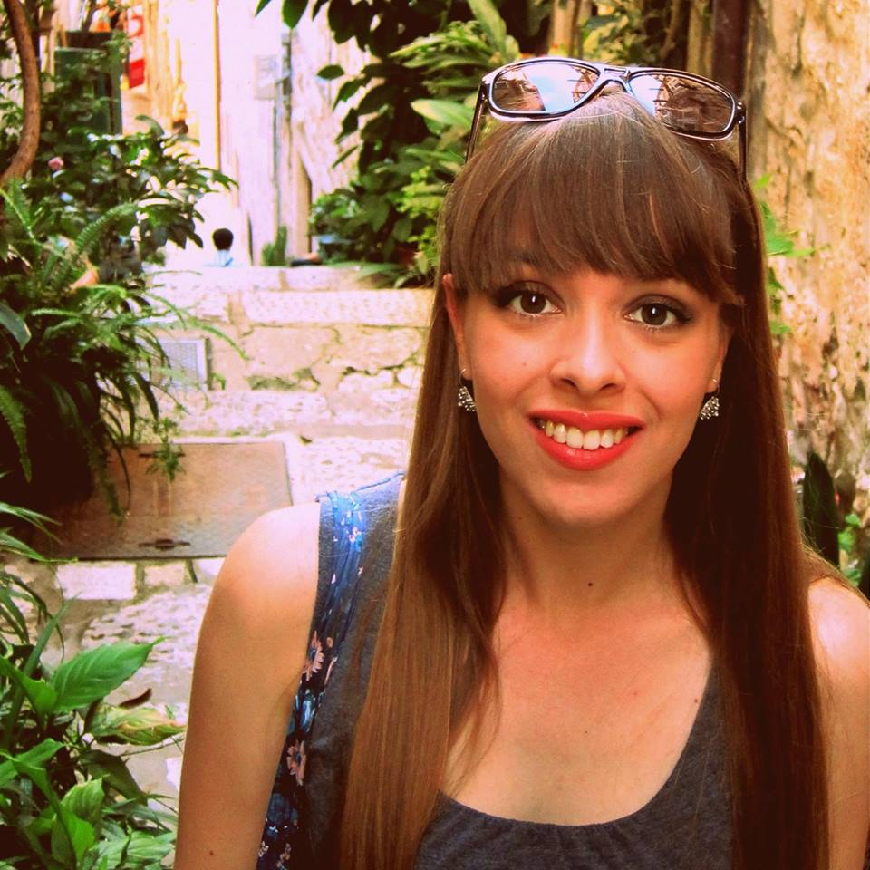

Organizatori
ORGANIZATORI (2015):

Sebastijan Dumančić |

Petra Krznar |

Jelena Tica |

Matilda Males |
PRIJAŠNJI ORGANIZATORI:


PRIJAŠNJI TEHNIČKI VODITELJI:

Filip Šklebar |

Luka Opašić |
Tonko Jakobović |
|
KRISTINA MAJSEC

Kristina je odabrala znanstvenu karijeru radi ispunjenja dječjeg sna o davanju važnog doprinosa čovječanstvu. Njen interes za matematiku i kemiju razvio se vrlo rano te je odveo do pobjede na državnom natjecanju iz kemije 2001. Slijedeći ljubav prema znanosti o živim sustavima, odlučila je studirati molekularnu biologiju na Prirodoslovno – matematičkom fakultetu u Zagrebu. Tijekom studija zanimali su je različiti problemi. Između ostalog, radila je na karakterizaciji potencijalnih kemoterapeutika za stanice raka vrata maternice, na odgovoru biljaka na abiotički stres, a za rad na arhealnoj tRNA dobila je Rektorovu nagradu 2008. Trenutno izrađuje doktorat iz biologije na PMF-u u Zagrebu čija je tema fitoremedijacija: kako napraviti biljke koje čiste tlo od teških metala.
Učeći o nevjerojatnom svijetu znanosti, Kristina ga je željela podijeliti i s drugima. Prvi put je došla na Ljetnu školu znanosti 2008. kao voditelj Swapshopa, na nagovor svoje prijateljice Petre Pušić. Među sudionicima Škole, koji su svi bili posvećeni znanosti i obrazovanju, osjećala se kao da je našla mjesto kojem pripada. To je bilo mjesto s odličnom atmosferom optimizma i napretka, gdje su njene strasti prema znanju i težnja prema izvrsnosti bili najbolje shvaćeni. Upravo zato, Ljetna škola znanosti postala je njen novi dom kamo se svake godine vraćala kao predavač ili voditelj projekta.
Kristina je također vrlo zainteresirana za jezike i trenutno uči francuski i španjolski. Oduševljena je s matematičkom pravilnošću jezičnih konstrukcija i kako ljudi izražavaju iste osjećaje, potrebe i stavove različito na različitim jezicima; kako smo istovremeno toliko slični i toliko različiti. Očarana utjecajem pisane riječi, pisala je za studentski biološki časopis In Vivo, a trenutno radi na ostvarivanju svog interesa prema kreativnom pisanju.
MATIJA PIŠKOREC

Matija se zainteresirao za znanost nakon što je, još kao učenik gimnazije u Bjelovaru, pročitao knjigu Jamesa Gleicka: “Kaos: Stvaranje nove znanosti”. Potaknut knjigom, odlučio je primijeniti formule za kreiranje predivnih slika fraktala u programskom jeziku Pascal. Taj program je potajno pisao u svoje bilježnice tijekom predavanja. Nedugo zatim, nakon što napisao maturalnu radnju s temom nedeterministički kaos, odlučio je da je računarstvo prava stvar za njega.
Matija je na Ljetnu školu znanosti došao 2008. godine zahvaljujući Nini Antulov-Fantulinu, koji je u to vrijeme bio jedan od organizatora. Te je godine na Školi vodio projekt vezan uz temu kompleksnih mreža. Svidjela mu se ideja da srednjoškolci, studenti i znanstvenici uče jedni od drugih i pritom se dobro zabavljaju. Iduće godine se vratio na Školu kao voditelj radionice s temom kamera obscura i analogna fotografija.
Matija je diplomirao na studiju Fakulteta elektrotehnike i računarstva Sveučilišta u Zagrebu 2010. godine. Trenutno radi kao asistent na Institutu Ruđer Bošković. Njegovi glavni istraživački interesi su u području bioinformatike i kompleksnih sistema jer te domene koriste metode računarstva da istraže različite pojave u prirodnom i ljudskom svijetu. Od 2006. godine natječe se na debatnim turnirima Britanskog parlamenta u Hrvatskoj i inozemstvu. Od 2007. godine član je foto sekcije KSET-a (Klub studenata elektrotehnike) i redovni predavač na tečajevima fotografije koji su organizirani svaki semestar. Glavne preokupacije su mu Photoshop i manipulacija digitalnim fotografijama, a njegovi radovi se mogu pronaći na: http://galerija.kset.org i ovdje.
DRAŽEN LUČANIN

Kako su ga odgojili profesori, Dražen nije mogao odoljeti razvijanju zanimanja za znanost. Također, kako se neko računalo uvijek motalo u blizini otkako zna za sebe, računarstvo ga je najviše zaintrigiralo. Sve to skupa dovelo je do diplome računarske znanosti na Fakultetu elektrotehnike i računarstva u Zagrebu i bavljenja različitim projektima i temama - od umjetne inteligencije, raspoznavanja lica i govora do multimedijskih zabavnih primjena i rješenja za raspodijeljeno računarstvo. Dražen trenutno radi doktorat na temu energetske učinkoviti u računalnim oblacima, zaposlen kao istraživački asistent na Tehničkom sveučilištu u Beču. Njegova profesionalna Internetska stranica sadrži detaljnije informacije.
Nakon što je čuo za Ljetnu školu znanosti, Draženu se ideja odmah svidjela. Prihvatio je poziv Matije Piškorca za vođenje projekta u 2010. i zadržao se u ekipi sve do sada. Koncept škole gdje se entuzijastični polaznici i mentori sparuju kako bi dobrovoljno radili na projektima koje sami odaberu je odlična! U tako poticajnoj okolini pojedinaca sličnih nazora i slikovitog istarskog krajobraza, ideje kao da padaju sa stabla i ništa se ne čini nemogućim za ostvariti.
U slobodno vrijeme, Dražen obožava svoje hobije i aktivnosti. Svira električnu i klasičnu gitaru i svirao je u metal, rock i blues sastavima (Viper, FF bend, Nehaj itd.) Nastoji se baviti crtanjem (web-stripovi i animacija). Nakon što je počeo sudjelovati u raznim aktivnostima fotografske sekcije studentskog kluba svoga sveučilišta (KSET), razvio je zanimanje i za fotografiju. Draženova razmišljanja o smicalicama otvorenog koda možete pročitati na njegovom blogu.
IVAN SUDIĆ

Ivan, dijete dvoje matematičara, nije trebao puno da se zainteresira za prirodu. Njegova fascinacija prirodnim znanostima zaiskrila je u vrlo ranoj dobi. U početku je mislio da će mu kemija biti životni poziv, ali tijekom srednje škole počeo je istraživati svijet fizike pripremajući se za IYPT (International Young Physicists' Tournament). Većinu svog srednjoškolskog slobodnog vremena provodio je s kolegama iz ekipe za IYPT radeći na eksperimentalnim postavima i rješenjima znanstvenih problema. Trud i rad je rezultirao ekipnom pobjedom na turniru 2006. godine. Fizika ga je fascinirala kao alat za poboljšanje svijeta, jer fizika otključava vrata prema inovativnim tehnologijama i napretku čovječanstva. Odlučio je nastaviti karijeru fizičara i trenutno završava istraživački smjer fizike na Prirodoslovno matematičkom fakultetu u Zagrebu. Područje interesa mu je fizika čvrstog stanja. Za rad u tom području dodijeljena mu je Rektorova nagrada. U zadnje vrijeme, raste mu interes za primjenu fizike u znanostima o okolišu.
Ivan je sudjelovao na Ljetnoj školi znanosti 2008. godine kao voditelj radionice te 2009. godine kao voditelj projekta. Osim podučavanja na ovoj Školi, 2007. godine bio je suosnivač Istraživačkog centra mladih u Zagrebu. To je mjesto gdje srednjoškolski učenici s interesom za znanstvenim radom mogu dobiti savjete iskusnijih te koristiti odgovarajuću eksperimentalnu opremu.
Ivan također uživa u raznim sportovima. Bavi se veslanjem od kad se sjeća, s uspjehom na međunarodnoj razini. Odlučio se detaljno posvetiti fakultetu, što ga je prisilio da odustane od profesionalnog sporta, ali i dalje vesla rekreativno kao kapetan fakultetske ekipe. Zimi, kada se veslačke staze zalede, bavi se skijaškim trčanjem te, od nedavno, turnim skijanjem. Također, uživa u planinarenju i speleologiju.
MARKO KOŠIČEK

Još kao malog dječaka, Marka je zanimala matematika. Međutim, ubrzo nakon “otkrića” kemije, umjesto na brojeve usredotočio se na molekule. Za to su uglavnom zaslužni njegovi profesori kemije, koji su ga poticali da sazna više. Sudjelovao je na mnogim kemijskim natjecanjima, a 2003., dok je pohađao 5. gimnaziju u Zagrebu, osvojio je brončanu medalju na 35. Međunarodnoj kemijskoj olimpijadi. Kemija je stoga bila logičan izbor za njegovu karijeru. Marko je diplomirao kemiju na Prirodoslovno-matematičkom fakultetu Sveučilišta u Zagrebu te započeo doktorat na području biokemije. Trenutno radi na Institutu Ruđer Bošković u Zagrebu. Njegovi znanstveni interesi su molekularni mehanizmi Alzheimerove bolesti, posebice uloga lipida u neurodegeneraciji. S obzirom da 15 milijuna ljudi pati od ove bolesti i njen pravi uzrok još uvijek nije poznat, Marko smatra ovu temu izrazito izazovnom i znanstveno privlačnom.
Uz kemiju, Markova strast je znanstvena komunikacija i popularizacija znanosti. Aktivno je uključen u Festival znanosti u Zagrebu od 2007. godine kao predavač i voditelj radionica. Kao pozvani predavač također je sudjelovao i na drugim festivalima znanosti (Novi Sad, Atena, Sinj). 2008. godine Marko je pobijedio na hrvatkom i internacionalnom FameLab-u (Cheltenham, UK), natjecanju u prezentiranju znanstvenih tema bez pomoći vizulanih alata u samo 3 minute. Njegova pobjednička prezentacija “Biokemija ljubavi” privukla je medije te rezultirala s više od 40 intervjua za nacionalnu i strane televizije, novine i radio-postaje.
Marko je aktivan i u edukaciji. Od 2005. godine priprema mlade hrvatske reprezentativce za Međunarodnu kemijsku olimpijadu. Na Ljetnu školu znanosti prvi put je došao 2007., na nagovor svog prijatelja Tomislava Kokotovića. Uživao je raditi s talentiranim i motiviranim srednjoškolcima i bio je fasciniran koliko se može napraviti uz dovoljno entuzijazma u improviziranom laboratoriju bez sofisticirane opreme. Nastavio se vraćati na Školu, najprije kao mentor 2008., a potom i kao organizator (2009-2011).
BRANIMIR LUKIĆ

Branimir se počeo interesirati za znanost nakon što je, još kao srednjoškolac u Požegi, pročitao “Kozmos” Carla Sagana. Njegovo početno zanimanje za astronomiju navelo ga je na diplomski studij fizike u Zagrebu, nakon čega je uslijedio doktorski studij na Ecole Polytechnique Fédérale de Lausanne (EPFL) u Švicarskoj. Njegovo istraživanje fokusiralo se na mehanička svojstva ugljikovih nanocijevčica i hidrodinamičke memorijske efekte Brownovog gibanja te je rezultiralo s nekoliko članaka koji su objavljeni u prestižnim znanstvenim časopisima. Nakon doktorata, svoje postdoktorsko istraživanje odradio je na Francuskom nacionalnom institute za zdravlje i medicinsko istraživanje u Parizu.
Tijekom doktorskog studija, Branimir je bio aktivan u Društvu znanost.org gdje je stvorio “Connect”: on-line mrežu hrvatskih znanstvenika u Hrvatskoj i svijetu. Njegov rad omogućio je hrvatskoj znanstvenoj zajednici da se organizira i aktivno sudjeluje u znanstvenoj politici.
Branimir je prvi put došao u Višnjan 1997., kao polaznik Ljetne škole astronomije. Zaljubio se u duh mjesta i redovito se vraća napuniti baterije entuzijazmom i inspiracijom kao i stvoriti nova prijateljstva. Kroz različite uloge, uključen je u Ljetnu školu znanosti još od njenog začetka 2001. godine. Kao organizator Škole od 2004., dao je kritičan doprinos razvoju Škole, pogotovo konceptualnom dizajnu znanstvenog programa. Danas je član Organizacijskog odbora i radi na dugoročnom razvoju Škole.
Od rujna 2010. godine, Branimir je zaposlen kao nastavnik fizike na Tehničkoj školi Požega. Uz posao, pohađa nastavu iz pedagogije i srodnih predmeta na Sveučilištu u Zagrebu te se priprema za državni stručni ispit za nastavnike.
MARTINA MIJUŠKOVIĆ

Martina se s molekularnom biologijom prvi put susrela u gimnaziji u Bjelovaru zahvaljujući jednoj od svojih profesorica. Bilo je to vrijeme značajnih otkrića, poput kloniranja ovce Dolly i otkrića uzroka kravljeg ludila. Iako je uvijek imala snažan interes za umjetnost (primjerice, 11 godina je pohađala glazbenu školu), uvijek ju je zanimalo što se događa u laboratorijima te se odlučila na studij molekularne biologije.
Tijekom diplomskog studija na Prirodoslovno-matematičkom fakultetu Sveučilišta u Zagrebu, Martina je bila aktivna u Udruzi studenata biologije (BIUS), gdje je zajedno sa svojim kolegama organizirala “journal” klubove i prvi tečaj bioinformatike na Sveučilištu. Nakon što je diplomirala, prešla je na ETH Zurich (Švicarska) gdje je doktorirala. Njezin rad fokusirao se na generalni transkripcijski faktor TFIID, veliki proteinski kompleks potreban za transkripciju gena.
Tijekom doktorata, 2003. godine Martina je saznala za Ljetnu školu znanosti zahvaljujući svom prijatelju Branimiru Lukiću. Oduševljena i inspirirana kreativnom atmosferom koja je vladala na Školi, odlučila se vratiti kao voditeljica projekta te 2005. godine kao organizatorica Škole. Zajedno s Branimirom Lukićem, uživala je u kreativnom procesu dizajniranja znanstvenog programa i planiranju budućeg rasta Škole. To je uključivalo konceptualizaciju i konačnu podjelu Ljetne Škole znanosti na dva kampa: S3 i S3++. Od 2009. godine Martina je član Organizacijskog odbora i fokusirana je na dugoročni razvoj Škole.
Martina trenutno živi u Philadelphiji, gdje radi kao postdoktorandica na Medicinskoj školi Pennsylvanijskog sveučilišta (University of Pennsylvania). U slobodno vrijeme se bavi plesom i fotografijom te piše blog. Aktivna je kao TED prevoditeljica i nada se jednog dana posjetiti TED konferenciju da bi pričala o svom radu u edukaciji.
KORADO KORLEVIĆ

Korado je rođen u Višnjanu. Još od ranog doba, bio je fasciniran astronomijom (sam je ručno prepisao knjigu Otona Kučere “Naše nebo”). Nakon studija fizike u Rijeci, 12 godina je radio u osnovnoj školi u Višnjanu. Bio je vrlo aktivan u vođenju izvannastavnih aktivnosti svojih učenika, koji su osvajali najbolja mjesta na državnim natjecanjima. Korado je jedan od osnivača Višnjanske zvjezdarnice i prvog većeg edukacijskog projekta, Višnjanske škole astronomije, utemeljene 1986.
Njegovi znanstveni interesi najprije su ga odveli na ekspediciju u Tungusku (Rusija), gdje je istraživao kratere nastale padom asteroida. Motiviran mogućnošću sudara asteroida sa Zemljom, počeo je promatrati asteroide u Višnjanskoj zvjezdarnici – rad koji je rezultirao otkrićem više od 1400 asteroida i 2 kometa koja nose njegovo ime. Višnjanska zvjezdarnica nalazi se među 12 najproduktivnijih svjetskih zvjezdarnica.
Korado je nastavio biti aktivan u znanstvenoj edukaciji i astronomiji asteroida. Među njegovim trenutnim projektima su izgradnja nove zvjezdarnice u obližnjem mjestu Tićan i uspostavljanje novog Znanstveno-edukacijskog centra Višnjan s međunarodnom suradnjom preko NYEX (Network of Youth Excellence). 2005. godine inicirao je novo državno natjecanje, VIP EUREKA, koje se zasniva na eksperimentalnim istraživanjima koja provode srednjoškolci. Pružio je važnu organizacijsku potporu (prikupljanje sredstava i koordinaciju) za Ljetnu školu znanosti od njenog početka, 2001. Korado je još uvijek je aktivan kao mentor na Višnjanskoj školi astronomije.
LUKA OPAŠIĆ

Luka, student druge godine medicinskog fakulteta u Zagrebu, bio je sudionik ljetne škole znanosti 2007., 2008. i 2009. Kako bi se odužio za sve što je naučio i prenio to mlađim generacijama, vodio je radionicu 2010., a ove godine je tehnički voditelj na Školi.
Na S3++ 2008. godine upoznao se s biologijom mora, nakon čega je nastavio istraživanja na području reproduktivne zoologije mora. Trenutno ga zanimaju matične stanice te započinje rad na regeneraciji mozga nakon moždanog udara uporabom neuralnih matičnih stanica.
Osim medicine, koja mu uzima većinu vremena, Luka svira gitaru u bendu Blues Train, roni preko ljeta, te radi na razvoju vlastite kreativnosti.
BRANKO ĐURĐEVIĆ

Otkako se sjeća, Branko je bio fasciniran svijetom oko sebe. Želio je znati sve o svemu. Iako mu je bilo teško izabrati, na kraju se ipak odlučio za studij fizike. Fiziku je vidio kao najfundamentalniju od svih znanosti, disciplinu koja omogućava duboko razumijevanje prirode, što ju je učinilo još misterioznijom. Branko trenutno završava diplomski studij fizike na Prirodoslovno-matematičkom fakultetu Sveučilišta u Zagrebu te želi nastaviti znanstvenu karijeru u području kozmologije ili fizike elementarnih čestica.
Branko sudjeluje na Ljetnoj školi znanosti od 2004. godine. Još kao polaznik se zaljubio u atmosferu koja je tamo vladala. Najviše mu se svidjela činjenica da je napokon pronašao mjesto gdje može upoznati ljude sa sličnim interesima i gdje može postavljati pitanja koja je uvijek želio postaviti. Od tada se uvijek vraća, bilo kao tehnička podrška, voditelj projekta ili organizator škole. Slaže se s idejom obrazovanja koju predlaže Škola te želi promijeniti sadašnje stanje gdje redovne škole uglavnom ne promoviraju kritički način razmišljanja i kreativnost.
Branka također zanima glazba i voli pjevati. Član je zbora Studentske sekcije Hrvatskog fizikalnog društva. Želja mu je ići u glazbenu školu kako bi detaljnije istražio taj svoj interes.
FRAN SUPEK
Još od malih nogu, Fran je imao veliki interes za živi svijet oko sebe. Znatiželju su mu probudile šetnje prirodom na koje ga je vodio djed, dok mu je pričao o ljekovitim svojstvima bilja, kako razaznati pjev različitih vrsta ptica, ili zašto mahovina raste na sjevernoj strain drveta. Ovaj interes je zasjenio samo dolazak njegovog prvog računala – Commodore 64 – i knjige koja ga je naučila da u programskom jeziku BASIC tjera računalo da radi beskorisne ali zabavne trikove. Dok mu se interes premještao između biologije i računarstva, Fran je ipak odlučio studirati molekularnu biologiju. Diplomirao je na Sveučilištu u Zagrebu u polju bioinformatike, tada novoj i uzbudljivoj znanstvenoj disciplini.
Fran je nedavno doktorirao na komparativnoj genomici bakterija, istražujući ovu tematiku na Institutu Ruđer Bošković u Zagrebu. Uz to što je radio kao jedini biolog u laboratoriju za umjetnu inteligenciju, Fran je surađivao na raznim istraživačkim projektima sa medicinarima, organskim kemičarima i biolozima koji istražuju rak. Fran sada radi kao Marie Curie postdoktorant u Centre de Regulació Genòmica (CRG) u Barceloni, Španjolska (puni CV).
Vjerujući da znanstvenici imaju odgovornost komunicirati rezultate i značaj svoga istraživanja široj javnosti, Fran je često surađivao sa lokalnim i nacionalnim novinama, radiom i TV postajama kako bi popularizirao znanosti. 2007. godine je pobijedio na natjecanju u kratkim znanstvenim prezentacijama FameLab Hrvatskasa izlaganjem o procesu smatanja proteina.
Frana je s Ljetnom školom znanosti upoznala njegova dugogodišnja kolegica i prijateljica, Martina Mijušković, koja ga je nagovorila da bude voditelj grupe 2007. godine. Shvativši koliko bi bilo lijepo da je takva škola postojala u vrijeme kad je on sam bio srednjoškolac, rado se vraćao na Školu svake godine otada, doprinoseći kao predavač, voditelj projekta ili kao organizator S3++ 2009. Čak i nakon nekoliko godina rada na školi, Frana i dalje iznenađuje entuzijazam za znanost koji dijele i mentori i polaznici na Ljetnoj školi znanosti u Višnjanu.
ANĐELA ŠARIĆ

Andela je svoju dugu vezu s prirodnim znanostima započela pod utjecajem oca liječnika. Kao dijete bila je fascinirana biologijom i ljudskim organizmom, a odrastajući je svoje interese preusmjerila prema fundamentalnijim znanostima- kemijji i fizici. Ideja da mućkajući kemikalije u tikvici zapravo manipulira česticama na atomskoj razni i stvara potpuno nove atomske organizacije njoj je bila nevjerojatno privlačna. Kemija joj je dala osjećaj kreativnosti, dok je fizika dodala racionalnost i kontrolu. Danas Anđela postaje stručnjak u području kemijske fizike.
Tijekom za nju vrlo poticajnog srednjoškolskog obrazovanja, Anđela je sudjelovala na različitim državnim natjecanjima iz prirodnih znanosti te na Međunarodnim kemijskim olimpijadama, gdje je osvojila brončanu medalju. Još za vrijeme studija kemije na Prirodoslovno-matematičkom fakultetu u Zagrebu započela je istraživačku karijeru u području teorijske kemije. Potaknuta time, doktorsko istraživanje je nastavila na prestižnom sveučilistu Columbia u New Yorku, gdje trenutno radi na razumijevanju fizike elastičnih materijala koji izgrađuju sve u nama: od stanice do najvećeg ljudskog organa - kože. (Vise o njenom istraživanju mozete saznati ovdje.)
Podučavanje mladjih Anđela smatra sastavnim dijelom karijere, a time održava i vlastitu motivaciju i ljubav prema znanosti. Anđela je niz godina sudjelovala u pripremama srednjoškolaca za natjecanja, u pripremama kemijskih olimpijaca, na Festivalu Znanosti u Zagrebu, a trenutno radi kao asistent na sveučilistu Columbia.
Na Ljetnu školu znanosti Anđela je prvi put došla 2005. godine kao voditelj workshopa. Poput većine ljudi koji posjete Školu, i ona se zaljubila u atmosferu koja vlada kampom, u opusteni i spontani prijenos znanja, te u tople ljude koji svake godine sudjeluju u Žkoli. Od tada se vraća svake godine te je sudjelovala kao voditelj projekta, predavac i organizator. Anđela Školu vidi kao izvrsnu platformu za usmjeravanje mladih umova i zainteresirana je raditi na njenom razvoju. Anđelin cilj je omogućiti sudjelovanje svakom zainteresiranom učeniku, bez obzira na dosadašnje obrazovanje ili socijalnu sredinu iz koje dolazi.
NINO ANTULOV-FANTULIN

Još kao dvanaestogodišnjak, Nino se oduševio astronomijom te se učlanio u lokalni astronomski klub "Gea-X Slavonski Brod". Astronomski eksperimentalni projekti s kojima se bavio pružili su mu priliku upoznavanja znanstvene metode i detaljnije slike svemira. Kasnije, kao srednjoškolac je zavolio programiranje i napisao svoje prve računalne programe (jedan za enkripciju podataka "Word Crypt" i drugi za simulacije širenja epidemija "Burning Virus") zbog kojih je odlučio studirati računarsku znanost.
Nino je završio preddiplomski i diplomski studij na Fakultetu elektrotehnike i računarstva, Sveučilišta u Zagrebu. Trenutno, Nino je zaposlen kao znanstveni novak na Institutu Ruđer Bošković u Zagrebu. Nino je također student doktorskog studija na Fakultetu elektrotehnike i računarstva u Zagrebu. Njegova područja istraživanja uključuju kompleksne mreže i sustave (simulacije širenja epidemija), strojno učenje, otkrivanje znanja u skupovima podataka i prianjanje proteina.
Kao srednjoškolac, Nino je bio sudionik na Ljetnoj školi znanosti 2004 i 2005, gdje je dobio svoju prvu priliku rada na pravim znanstvenim projektima iz područja računarskih znanosti. Nino se godinu za godinu vraćao na školu kao voditelj radionica, projekata ili kao organizator jer je želio drugima pružiti iskustvo rada u znanosti kakvo je on dobio tamo kao srednjoškolac.
Nino voli sve sportove a posebno borilačke vještine. Kada sunce sja najradije se vozi na svom novom biciklu. Nedavno je počeo igrati šah u slobodno vrijeme sa svojim cimerima u njihovom privatnom šahovskom klubu "Četiri konja". Također uživa u zvukovima starih vinil ploča koje pušta na svom gramofonu.
ANAMARIJA ŠTAFA
Anamarija se zaljubila u znanost još kad joj je bilo 7 godina. Već je tada pomagala ocu, također znanstveniku, pri eksperimentima iz biljne biologije. Nakon što je diplomirala biotehnologiju na Sveučilištu u Zagrebu, tu je nastavila i s doktorskim studijem te doktorirala na području molekularne genetike. Tijekom doktorata istraživala je molekularne mehanizme koji dovode do zamjene gena kod najjednostavnijeg eukariotskog modelnog organizma – kvasca Saccharomyces cerevisiae. Anamarija se preselila u Pariz gdje je kao postdoktorandica istraživala mehanizme uključene u proces starenja kvasca u laboratoriju INSERM U1001 i Centru za interdisciplinarna istraživanja na Sveučilištu Paris Descartes, Francuska. Nedavno se vratila istraživanju popravka DNA te kao postdoktorandica na Sveučilištu Columbia, New York, SAD istražuje mehanizme homologne rekombinacije u kvascu.
Kao asistentica na studentskim praktikumima na Sveučilištu u Zagrebu, Anamarija je aktivno uključena u visoko obrazovanje. Uz to, 2007. je godine održala radionicu o kvascu na Ljetnoj tvornici znanosti, ljetnom programu za osnovnoškolce i srednjoškolce na Mediteranskom institutu za istraživanje života u Splitu.
Na Ljetnu školu znanosti ju je 2009. godine pozvao prijatelj Fran Supek. Na kampu S3++ vodila je projekt usredotočen na molekularnu genetiku i toksikologiju. Zadivili su je snažna motivacija i uporan rad njenih učenika, kao i interakcija između voditelja projekata i organizatora. Odlučila se vratiti u Višnjan iduće ljeto te je entuzijastično prihvatila ponudu da bude ko-organizatorica kampa S3++ 2010.
NENAD KATANIĆ

Od Nenadovih najmlađih dana bilo je jasno da će njegova karijera imati nekakve veze s računalima. Kao što on često voli istaknuti, prva je slova naučio s tipkovnice starog računala Commodore 64. Od tada većinu svojeg vremena posvećuje učenju i otkrivanju uzbudljivog svijeta računalne znanosti.
Nenad je završio preddiplomski i diplomski studij iz područja programskog inženjerstva na Fakultetu Elektrotehnike i Računarstva na Sveučilištu u Zagrebu te je nedavno upisao i doktorski studij iz područja računarstva na istom fakultetu. Trenutno je zaposlen kao programski inženjer u kompaniji Ericsson Nikola Tesla u Zagrebu i radi na istraživačkom projektu iz područja modeliranja visokokompleksnih programskih sustava u telekomunikacijama. Osim rada u Ericssonu Nikoli Tesli Nenad je uključen i u mnoge druge projekte razvoja programske podrške. Jedan od njemu bitnijih je svakako inovativni projekt Wildlife Observer na kojem je radio tijekom diplomskog studija, a za cilj je imao razvoj napredne programske potpore za praćenje divljih životinja. Ovaj sustav uskoro bi trebao postati primarni alat kojim će se koristiti hrvatski znanstvenici iz područja veterinarstva koji se bave praćenjem ugroženih životinjskih vrsta (posebice vukova) u Hrvatskoj. Za ovaj projekt, Nenad je nagrađen Rektorovom nagradom 2009. godine. Dodatno, dio projekta realiziran je kao jedan od projekata računarske znanosti na Ljetnoj Školi Znanosti 2008. godine.
Nenadov prvi susret sa znanošću dogodio se 2007. godine na Ljetnoj Školi Znanosti u Višnjanu nakon što ga je Nino Antulov-Fantulin pozvao da zajedno s njim sudjeluje na Školi u ulozi voditelja projekta iz računarske znanosti. Polaznici škole su ga naprosto oduševili, odnosno njihova darovitost, motivacija i želja za znanjem te je tada shvatio da će njegov život krenuti putem znanosti i edukacije. Nakon prve godine sudjelovanja, ponovno je sudjelovao na Školi kao voditelj projekta 2008. godine te 2009. godine kao organizator Škole.
Osim znanstveno-istraživačkog rada, Nenadova prva ljubav su glazba i putovanja. Aktivno je uključen u Hrvatsku punk-rock scenu kao basist Hrvatskog punk-rock benda Kriva Istina. Do sada su već odsvirali preko 60 koncerata diljem Balkana i izdali jedan samostalni album pod nazivom Van Okvira. Kroz iznimno angažirane socijalno-politički orijentirane tekstove, ovaj bend izravno ukazuje na neke od problema današnjeg hrvatskog društva.
FILIP ŠKLEBAR
Filip pohađa četvrti razred u Gimnaziji Bjelovar. Sudjelovao je na ljetnoj školi znanosti 2009. i 2010. godine. Kako bi se odužio za sve što je naučio, volontira kao tehnički voditelj.
Na ljetnoj školi znanosti 2009. godine upoznao se s fizikom plazme te je nastavio rad na tom području. Sudjelovao je na državnim natjecanjima iz fizike s radom „Kelvinova kapaljka“ , „Efikasnost žarulje u ovisnosti o naponu“ i kemije gdje je napravio uređaj za mjerenje provodnosti otopina. Trenutno ga zanima fizikalna kemija, elektronika i ekspreimentalna fizika.
Od 2008. godine član je fotokluba Bjelovar. Glavna preokupacija su mu obrada digitalnih fotografija i grafički dizajn. Negovi radovi se mogu pronaći ovdje.
PETRA PUŠIĆ
 Odluku da postane znanstvenica Petra može zahvaliti svojoj majci, koja je uvijek poticala i njegovala njezinu znatiželju o svijetu oko sebe. Završavajući srednju školu i na pragu studija, Petra je imala problema odlučiti se što studirati jer je oduvijek u gotovo svemu mogla pronaći nešto uzbudljivo i zanimljivo. Molekularna biologija, matematika, psihologija i elektrotehnika su bili na vrhu njezine liste, no na dan odluke, kada je ušla u staru zgradu Biološkog odsjeka i njezino ime pročitano, znala je da se nalazi na pravom mjestu. Studiranje biologije je bilo jedno od najzanimljivijih i motivirajućih perioda u Petrinu životu dosad. Petra je bila dio male grupe ambicioznih entuzijasta koji su uvijek žudno željeli naučiti i iskusiti više.
Odluku da postane znanstvenica Petra može zahvaliti svojoj majci, koja je uvijek poticala i njegovala njezinu znatiželju o svijetu oko sebe. Završavajući srednju školu i na pragu studija, Petra je imala problema odlučiti se što studirati jer je oduvijek u gotovo svemu mogla pronaći nešto uzbudljivo i zanimljivo. Molekularna biologija, matematika, psihologija i elektrotehnika su bili na vrhu njezine liste, no na dan odluke, kada je ušla u staru zgradu Biološkog odsjeka i njezino ime pročitano, znala je da se nalazi na pravom mjestu. Studiranje biologije je bilo jedno od najzanimljivijih i motivirajućih perioda u Petrinu životu dosad. Petra je bila dio male grupe ambicioznih entuzijasta koji su uvijek žudno željeli naučiti i iskusiti više.
Tijekom studija Petra je shvatila kako uzbudljiv može biti svijet mikrobiologije te je pokušavala naučiti više o njemu i trudila se upisivati što više kolegija iz tog područja istraživanja. Nakon što je napravila prediplomski i diplomski rad, kao i nekoliko stručnih praksi iz područja molekularne biljne mikrobiologije, Petra se zaposlila kao znanstveni novak i asistent na Zavodu za mikrobiologiju i parazitologiju, Medicinski fakultet u Rijeci. Tamo je istraživala interakciju ljudskih patogena, osobito bakterije Legionella spp. sa stanicama imunološkog sustava, amebama i drugim bakterijama. Trenutno je na doktoratu u jednom od Max F. Perutz laboratorija u Beču, gdje proučava molekularne mehanizme regulacije represije katabolita u bakteriji Pseudomonas aeruginosa, ljudskom patogenu koji uzrokuje ozbiljne probleme u pacijenata s cističnom fibrozom.
Željevši podijeliti svoju očaranost znanošću s drugim ljudima, Petra je sudjelovala na mnogim znanstveno popularizirajućim događajima kao što su Festival znanosti, Ljetna tvornica znanosti i Noć biologije na Sveučilištu u Zagrebu. Tijekom studija u Zagrebu, upoznala je Branka Đurđevića koji ju je doveo na Ljetnu školu znanosti u 2007. Jednom kada je iskusila atmosferu na Školi, popularizacija znanosti među mlađim naraštajima je postala njezin velik izvor inspiracije i pokretačke energije u svakodnevnom znanstvenom radu. Za Petru Ljetna škola znanosti predstavlja međunarodni “lonac za taljenje” kreativnosti, entuzijazma i sjajnih ideja s okusom prave ljubavi i strasti prema znanosti. Studenti na Školu predstavljaju pluripotentnu masu ideja koja poput spužve apsorbira sve što se događa oko nje. Mentori, pokušavajući usaditi studentima drugačiji (znanstveni) pogled na život i njegovati njihovu ljubav prema znanosti, na kraju postaju učenicima.
Učenje stranih jezika, čitanje knjiga i putovanja su također Petrine velike strasti. Nedavno je shvatila da bi joj bavljenje sportom moglo koristiti. Trenutno eksperimentira s nogometom, odbojkom na pijesku i mnogim drugim sportovima.
SEBASTIJAN DUMANČIĆ
 Sebastijan je pronašao interes u znanosti kroz djela Julesa Verna, ponajviše čitajući 20 000 milja pod morem. Kako nije mogao sagraditi vlastiti Nautilus, zainteresirao se za informatiku, što je bio logičan izbor budući da ga je odgojilo dvoje informatičara. Nakon što je napisao svoje prve programe u Logo-u, bio je uvjeren da je to pravi izbor.
Sebastijan je pronašao interes u znanosti kroz djela Julesa Verna, ponajviše čitajući 20 000 milja pod morem. Kako nije mogao sagraditi vlastiti Nautilus, zainteresirao se za informatiku, što je bio logičan izbor budući da ga je odgojilo dvoje informatičara. Nakon što je napisao svoje prve programe u Logo-u, bio je uvjeren da je to pravi izbor.
Sebastijan se pridružio Ljetnoj školi znanosti u ljeto 2012 kao voditelj projekta. Sa svojim studentima radio je program koji je prepoznavao korisnikov glazbeni ukus. Impresioniran atmosferom i strašću polaznika škole i njihovim mentora, odlučio se vratiti na Školu kao organizator. Uz to, član je udruge Mladi nadareni matematičari Marin Getaldić i jedan od organizatora Ljetnog kampa mladih matematičara. Kroz iskustvo rada na obje ljetne škole, edukacija mladih znanstvenika uvukla mu se pod kožu.
Trenutno je student diplomskog studija računarske znanosti na Fakultet elektrotehnike i računarstva, Sveučilišta u Zagrebu. njegovi glavni interesi su strojno učenje i optimizacija. posebno je zainteresiran za primjenu koncepata strojnog učenja na probleme medicinske dijagnostike. Uz znanost, veliki hobi mu je glazba. Već 12 godina svira francuski rog, te je dvije godine bio član WYWOP orkestra mladih u Austriji.
NEVA MARGETIĆ
 Kao dijete, Neva je bila više zainteresirana za jezike i pravo nego za znanost. No, sve se promijenilo kada su se srednjoškolska predavanja iz biologije počela baviti genetikom. Zahvaljujući profesorici biologije, Neva je postajala sve više zainteresirana za biologiju, čudo života i genetiku koja iza toga stoji. Međutim, iako je inicijalno željela studirati molekularnu biologiju, na kraju je završila na Fizičkom odsjeku Sveučilišta u Zagrebu. Tokom prve godine studija potpuno se zaljubila u fiziku kao znanost prvenstveno zahvaljujući divnim profesorima i asistentima koji su joj pokazali da fizika nije komplicirana i dosadna nego zabavna i uzbudljiva.
Kao dijete, Neva je bila više zainteresirana za jezike i pravo nego za znanost. No, sve se promijenilo kada su se srednjoškolska predavanja iz biologije počela baviti genetikom. Zahvaljujući profesorici biologije, Neva je postajala sve više zainteresirana za biologiju, čudo života i genetiku koja iza toga stoji. Međutim, iako je inicijalno željela studirati molekularnu biologiju, na kraju je završila na Fizičkom odsjeku Sveučilišta u Zagrebu. Tokom prve godine studija potpuno se zaljubila u fiziku kao znanost prvenstveno zahvaljujući divnim profesorima i asistentima koji su joj pokazali da fizika nije komplicirana i dosadna nego zabavna i uzbudljiva.
Na trećoj godini studija jedan od profesora joj je ponudio suradnju na edukacijskom projektu na Institutu za Fiziku. Cilj projekta bilo je približavanje magnetizma srednjoškolcima jer se, iako je iznimno zanimljiv, zbog svoje kompleksnosti magnetizam prilično slabo uči u školama. Glavni rezultat projekta je demonstracijski komplet za magnetizam koji omogućava izvođenje ukupno 27 eksperimenata a sadrži i upute kako ih izvesti te video snimke svakog pokusa.
2011., Marko Košiček je pozvao nju i kolegicu da sudjeluju na Ljetnoj školi znanosti kao voditeljice radionice o magnetizmu koristeći demonstracijski komplet. Tako se Neva upoznala sa Školom. Energija škole joj se gotovo trenutno uvukla pod kožu, a taj osjećaj pripadnosti je sve više rastao boljim upoznavanjem divnih ljudi koji sudjeluju na Školi i dijele istu strast za približavanjem znanosti djeci i srednjoškolcima. Stoga se Neva vratila na školu i sljedeće godine kao suvoditeljica projekta iz fizike jako koreliranih elektronskih sustava. U 2013. odlučila se pridružiti Društvu za edukaciju van okvira i pomoći daljnjoj organizaciji Ljetne škole znanosti.
Neva je magistra edukacije fizike i informatike i trenutno predaje informatiku u dvije osnovne škole. Planira upisati doktorat iz jednog od mnogih područja fizike koja ju zanimaju (atomske i molekularne fizike, nuklearne fizike ili biofizike), međutim to i nije lak izbor s obzirom da jednako tako voli predavati i raditi s djecom. U slobodno vrijeme redovito ide u teretanu i planinari. Također, voli ljeto, dobru hranu, čokoladu, društvene igre i tulumarenje s prijateljima.
PETRA KRZNAR
 Kada je Petra bila dijete, njena mama je znala govoriti – “Kad pronađeš posao koji te zanima, to je kao da si osvojila jackpot!”. Studiranje molekularne biologije je bio upravo taj jackpot za Petru s obzirom da je pronašla nešto što je ispunjavalo njen život. Tijekom studiranja, Petrin interes u znanosti se mijenjao, polazeći od stanične biologije i biokemije preko biofizike i računalne biologije. Bila je na dvije studentske prakse u Njemačkoj gdje je radila na unosu proteina u kloroplaste (biokemija biljaka) te klasifikaciji homeotskih proteina (računalna biologija). Iako je studij bio zahtjevan, Petra je pronašla vremena za aktivni rad u IAESTE studentskoj udruzi, sudjelujući u razmjeni studenata kao koordinator grupe za hrvatske studente.
Kada je Petra bila dijete, njena mama je znala govoriti – “Kad pronađeš posao koji te zanima, to je kao da si osvojila jackpot!”. Studiranje molekularne biologije je bio upravo taj jackpot za Petru s obzirom da je pronašla nešto što je ispunjavalo njen život. Tijekom studiranja, Petrin interes u znanosti se mijenjao, polazeći od stanične biologije i biokemije preko biofizike i računalne biologije. Bila je na dvije studentske prakse u Njemačkoj gdje je radila na unosu proteina u kloroplaste (biokemija biljaka) te klasifikaciji homeotskih proteina (računalna biologija). Iako je studij bio zahtjevan, Petra je pronašla vremena za aktivni rad u IAESTE studentskoj udruzi, sudjelujući u razmjeni studenata kao koordinator grupe za hrvatske studente.
Popularizacija znanosti postala je dio Petrinog života u 2009., nakon prve godine Noći biologije, događaja gdje ljudi svih generacija dolaze i aktivno sudjeluju, pomažući u eksperimentima ili slušajući razna popularno-znanstvena predavanja. Nakon što je čula zanimljive priče o Ljetnoj školi znanosti, prvi puta je došla na Školu iste godine, gdje je održala radionicu o kuhinjskoj gel elektroforezi i izolaciji DNA. Petru je oduševio duh Škole, ljudi koji su tamo radili i sam entuzijazam srednjoškolaca. 2012. vratila se na Ljetnu školu znanosti kao voditeljica projekta, a godinu kasnije kao organizator. Iste godine je postala dijelom Društva EVO, aktivno uključenog u različite projekte edukacije znanosti među srednjoškolcima. Ove godine Petra se veseli ponavljanju pustolovine organiziranja Ljetne škole znanosti, rame uz rame ambicioznim mladim ljudima čiji je osnovni cilj podijeliti svoje znanje i iskustvo dobiveno radom te vlastite životne znanstvene priče.
Petra je trentno na doktoratu na institutu ETH u Zurichu, gdje radi u pordučju sistemske biologije, koristeći metabolomiku u svrhu odeđivanja disfunkcionalnosti mitohondrija. U slobodno vrijeme obožava čitati knjige, provoditi vrijeme s prijateljima, igrajući društvene igre ili putujući.
NEMANJA JANKOVIĆ
 Sve je počelo u djetinjstvu, kada je prvi put povezao svoj strujni krug. Autić koji je išao naprijed-nazad nije predstavljao veliki pomak u tehnologiji, ali za Nemanju je to bila ogromna motivacija za daljnje stvaranje. Zanimanje za znanost ozvaničio je "Letnjom Naučnom Školom" u Istraživačkoj Stanici Petnica u 7. razredu osnovne škole. Dalji rad u Petnici nastavio je u srednjoj školi kroz seminare Primjenjene Fizike i Elektronike. Tokom četvorogodišnjeg boravka u Petnici radio je na više projekata, a u 3. godini srednje objavljen je njegov rad pod nazivom „Optičko praćenje prstiju i prepoznavnje karatkerističnih putanja“. Boravak u Petnici nije bio fokusiran samo na rad; prijateljstva tamo stečena su ostala za cijeli život i to je jedan od mnogo razloga zašto se Nemanja zalaže za popularizaciju znanosti. S tim ciljem sudjelovao je na Festivalu nauke u Beogradu, gde je sa svojim kolegama držao radionice da i najmlađima dočara razne zanimljive eksperimente.
Sve je počelo u djetinjstvu, kada je prvi put povezao svoj strujni krug. Autić koji je išao naprijed-nazad nije predstavljao veliki pomak u tehnologiji, ali za Nemanju je to bila ogromna motivacija za daljnje stvaranje. Zanimanje za znanost ozvaničio je "Letnjom Naučnom Školom" u Istraživačkoj Stanici Petnica u 7. razredu osnovne škole. Dalji rad u Petnici nastavio je u srednjoj školi kroz seminare Primjenjene Fizike i Elektronike. Tokom četvorogodišnjeg boravka u Petnici radio je na više projekata, a u 3. godini srednje objavljen je njegov rad pod nazivom „Optičko praćenje prstiju i prepoznavnje karatkerističnih putanja“. Boravak u Petnici nije bio fokusiran samo na rad; prijateljstva tamo stečena su ostala za cijeli život i to je jedan od mnogo razloga zašto se Nemanja zalaže za popularizaciju znanosti. S tim ciljem sudjelovao je na Festivalu nauke u Beogradu, gde je sa svojim kolegama držao radionice da i najmlađima dočara razne zanimljive eksperimente.
U 3. razredu srednje škole, 2011. godine, Petnica ga šalje na Ljetnu školu znanosti u Hrvatsku. Tamo radi na projektu u području programiranja, s još tri kolege iz različitih krajeva svijeta. Oduševljen radom na Školi, 2012. godine dolazi kao voditelj radionice, dok se 2013. godine vraća da vodi projekt. Da bi nastavio dijeliti entuzijazam koji su njemu prenijeli voditelji i organizatori prethodnih godina, 2014. godine prihvaća organizirati Ljetnu školu znanosti u Požegi.
Nemanja je trenutno na 3. godini Elektrotehničkog fakulteta Sveučilišta u Beogradu. Trenutno najveća strast su mu mikrokontrolori i digitalna obrada slike. Nemanja smatra da je jako bitno da se mladi zanimaju za znanost i da što više ulažu u svoje usavršavanje. Sa nestrpljenjem čeka ljeto i početak Škole u Požegi da upozna još više ljudi, stekne nova prijateljstva i prenese što više pozitivne energije na mlade ljude!
JELENA ŠPANIČEK
 Od kada je pogledala svoj prvi dokumentarac legendarnog David Attenborougha, Jelena je fascinirana međusobnom povezanošću klime, okoliša i mutacija, koje su proizvele sva jedinstvena bića u prekrasnim okruženjima koje danas imamo. Ova zanesenost ju je odvela na put znanosti, odnosno geologiji. Uspješno je diplomirala na Geološko-paleontološkom zavodu, Prirodoslovno-matematičkog fakulteta u Zagrebu, te se kasnije zaposlila kao znanstvena novakinja-asisitentica na istom Zavodu. Tijekom studija se susrela s mnogim područjima geologije, ali uvijek je imala poseban interes za sekvencijsku geologiju i paleontologiju.
Od kada je pogledala svoj prvi dokumentarac legendarnog David Attenborougha, Jelena je fascinirana međusobnom povezanošću klime, okoliša i mutacija, koje su proizvele sva jedinstvena bića u prekrasnim okruženjima koje danas imamo. Ova zanesenost ju je odvela na put znanosti, odnosno geologiji. Uspješno je diplomirala na Geološko-paleontološkom zavodu, Prirodoslovno-matematičkog fakulteta u Zagrebu, te se kasnije zaposlila kao znanstvena novakinja-asisitentica na istom Zavodu. Tijekom studija se susrela s mnogim područjima geologije, ali uvijek je imala poseban interes za sekvencijsku geologiju i paleontologiju.
Općenito, Jelenino područje interesa je evolucija, još od kada se na drugoj godini fakulteta susrela s kolegijem Historijska geologija, koji ju je oduševio. On je sadržavao sve što ju je privuklo k geologiji, odnosno paleontologiji – evolucija Svemira, planeta Zemlje i života na Zemlji, otkrivanje kako i zašto je došlo do promjena na Zemlji, a s time i spoznaja da ništa nije stalno, jer evoluirati znaći mjenjati se, i kao takav proces koji jednom kada započne više se ne može zaustaviti . Jelena uživa u otkrivanju i riješavanju tragova evolucije pomoću kojih saznaje kako su mjenjali drevni svijetovi na Zemlji. Velika joj je želja dati svoj doprinos riješavanju i objašnjavanju procesa koji se odvijaju unutar i oko nas, jer svi imamo prirodnu potrebu upoznati sebe i svijet oko nas. Da bi to postigli, ključno je da saznamo od kuda smo potekli te koji procesi i promjene su nas stvorili takvima kakvi jesmo.
Kako znanje, a s njime i znanost, raste i mjenja se kroz interakciju zajednice, kada je Jelena čula za Ljetnu školu znanosti, svidjela joj se ideja obogaćivanja mladih umova te se priključila, prvo kao voditeljica radionice i projekta a sada kao organizatorica. Jelena je strastvena čitačica knjiga te ju zanima široka paleta tema, od popularne zanosti, povijesnih romana, psihologije, detektivskih priča, znanstvene fantastike do fantasy romana. Također je veliki pobornik vježbanja mentalnih sposobnosti kroz riješavanje logičkih i problemskih zadataka, kao što je sudoku i šah.
ANTONIJA BURČUL
 Postoji li bolje mjesto u kojem ćete se zaljubiti u znanost od Ljetne škole znanosti? Za Antoniju, Ljetna škola znanosti je mjesto gdje je sve započelo – došla je na Školu kao učenica 4. razreda srednje škole u 2009. i ostala od tad.
Postoji li bolje mjesto u kojem ćete se zaljubiti u znanost od Ljetne škole znanosti? Za Antoniju, Ljetna škola znanosti je mjesto gdje je sve započelo – došla je na Školu kao učenica 4. razreda srednje škole u 2009. i ostala od tad.
Antonija je završila preddiplomski studij kemije na Sveučilištu u Zagrebu. Tijekom studija odslušala je kolegij iz računalne biofizike i zahvaljujući svom fantastičnom profesoru Bojanu Žagroviću, izgubila glavu za uzbudljivom znanstvenom zagonetkom – dinamičnim 3D strukturama biomolekula. Njene dvije strasti, znanost i putovanja, odvele su je na dva različita kraja svijeta. U Švicarskoj je proučavala dinamiku amiloidnog peptida povezanog s razvitkom Alzheimerove bolesti, dok su joj glavna tema istraživanja za vrijeme boravka u Singapuru bile protein-protein interakcije u stanici. Vrativši se u Švicarsku gdje upisuje diplomski studij strukturalne biologije i biofizike na ETH-u u Zurichu, Antonija je radila na proučavanju procesa u kojem proteini zadobivaju svoju 3D strukturu prilikom izlaska iz ribosoma. Antonija trenutno razmatra različite opcije za svoje poslijediplomsko obrazovanje.
Antonija vjeruje da je obrazovanje jedan od najmoćnijih načina da se promijeni svijet. U Zagrebu je vodila projekt “Znanstvene čarolije” čiji je cilj popularizacija znanosti kroz znanstvene radionice s djecom pretežno vrtićke dobi. Prošle godine, zajedno s Anđelom Šarić, pokrenula je EVO Internship Portal – online platformu čiji je cilj pružiti pomoć studentima u pronalasku stručnih praksi diljem Europe.
Nakon vođenja dvaju projekata na Ljetnoj školi znanosti 2011. i 2012. godine, 2014. godine je prihvatila poziv da organizira Školu. Nada se da će time vratiti barem mali dio konstantne podrške i entuzijazma koji joj se pružaju otkad je dosla na Školu. Antonija smatra Ljetnu školu znanosti svojim znanstvenim domom i raduje se tome što će zapaliti iskru za znanost i kritičko razmišljanje općenito u novoj generaciji srednjoškolaca.
JELENA TICA
 Za Jelenu je sve počelo čak i prije osnovne škole. Iako je voljela gledati televiziju i crtiće, Jelena je bila nadasve opsjednuta dokumentarcima, posebice onima Davida Attenborougha. Uživala je slagati puzzle, često dodatno komplicirajući slaganje okrećući ih naopako. Kad je krenula u školu, biologija i matematika su joj se uvukle pod kožu i sve više je postajala zainteresirana za područje ljudskih bolesti i parazita. Kako bi kombinirala strast prema rješavanju problema i prirodnim fenomenima, Jelena je zaključila da je najbolje naučiti nešto više. Iako nije bila sigurna koji studij upisati, naposljetku je odlučila postati studentica na Prirodoslovno-matematičkom fakultetu Sveučilišta u Zagrebu, gdje je završila preddiplomski i diplomski studij u području molekularne biologije. Trenutno privodi kraju svoj doktorat na institutu EMBL u Heidelbergu u području genomike. Iako se smatra molekularnom biologinjom, većinu svog vremena provodi ispred računalnog zaslona, izvršavajući računalne analize na velikim genetskim varijacijama koje se mogu pronaći unutar i između raznih populacija. U slobodno vrijeme Jelena voli čitati, gledati filmove, pisati svoj beauty blog i putovati.
Za Jelenu je sve počelo čak i prije osnovne škole. Iako je voljela gledati televiziju i crtiće, Jelena je bila nadasve opsjednuta dokumentarcima, posebice onima Davida Attenborougha. Uživala je slagati puzzle, često dodatno komplicirajući slaganje okrećući ih naopako. Kad je krenula u školu, biologija i matematika su joj se uvukle pod kožu i sve više je postajala zainteresirana za područje ljudskih bolesti i parazita. Kako bi kombinirala strast prema rješavanju problema i prirodnim fenomenima, Jelena je zaključila da je najbolje naučiti nešto više. Iako nije bila sigurna koji studij upisati, naposljetku je odlučila postati studentica na Prirodoslovno-matematičkom fakultetu Sveučilišta u Zagrebu, gdje je završila preddiplomski i diplomski studij u području molekularne biologije. Trenutno privodi kraju svoj doktorat na institutu EMBL u Heidelbergu u području genomike. Iako se smatra molekularnom biologinjom, većinu svog vremena provodi ispred računalnog zaslona, izvršavajući računalne analize na velikim genetskim varijacijama koje se mogu pronaći unutar i između raznih populacija. U slobodno vrijeme Jelena voli čitati, gledati filmove, pisati svoj beauty blog i putovati.
Jelena se po prvi puta pridružila Ljetnoj Školi Znanosti prošle godine, kao voditeljica projekta te se odmah zaljubila u cijeli projekt, ljude i entuzijazam koji se posvuda širio. Kad je dobila priliku sudjelovati u ovogodišnjoj Ljetnoj Školi kao organizatorica, odlučila je prihvatiti ponudu bez zadrške, iako je znala da će to biti veliki zalogaj. Premda je relativno nova članica obitelji Ljetne Škole, Jelena je uvijek bila spremna sudjelovati u podučavanju i promoviranju znanosti koliko god je mogla, putem raznih aktivnosti, kao što su Noc biologije i Program EMBL Ambasadora za Škole. Ove godine ne može dočekati vidjeti sva nova i svježa lica u Požegi kako bi podijelila ovo posebno iskustvo s njima.
MATILDA MALES
Za razliku od danas, Matilda je kao dijete gledala jako puno TV. Srećom, u to vrijeme TV program je imao što ponuditi, te je njena najdraža serija bila “Moje tijelo”. Taj fenomenalni francuski crtić je pratio priču o ljudskom tijelu i svim oku nevidljivim zanimljivim procesima koji se događaju u njemu. Upravo to je dodatno motiviralo Matildu da nauči više o malenom svijetu molekula i kemikalija koje nas okružuju. Zahvaljujući učiteljima u srednjoj školi, njena ljubav za znanost je zaiskrila još više, te je odlučila studirati na Prirodoslovno-matematičkom fakultetu. Završila je prediplomski studij molekularne biologije u Zagrebu, nakon čega se preselila u Njemačku kako bi diplomirala na Sveučilištu u Heidelbergu. Trenutno je na doktoratu iz genomike na institutu EMBL u Heidelbergu, gdje pokušava saznati koja je važnost misterioznog nekodirajućeg genoma u embrionalnom razvoju.
Matilda je dijelom S3 obitelji godinama, preciznije od 2006. Došla je na Ljetnu školu znanosti kao srednjoškolka, te se nastavila vraćati u različitim ulogama, od voditelja radionice, posjetitelja, tehničkog voditelja pa sve do voditelja projekta. Sudjelovala je i u drugim znanstveno-popularnim događanjima, vodeći radionice na Noci biologije te u Paris-Montagne-u. Imajući na umu koliki je izvor inspiracije i motivacije Ljetna škola za sve sudionike, prihvatila je tešku ulogu organizatora bez razmišljanja. Jedva čeka upoznati i spojiti nove briljantne mlade umove i entuzijaste znanosti na ovogodišnjoj Ljetnoj školi.
TONKO JAKOBOVIĆ
 Još otkad je bio dijete, Tonko je zaljubljenik u knjige stoga nije čudno kada je nastavio njegovati svoju znatiželju prema znanosti. Kasnije je postao zainteresiran za evolucijsku biologiju i medicinu zahvaljujući svom srednjoškolskom profesoru koji ga je poticao na vlastito istraživanje. Sve je rezultiralo različitim samostalnim i zajedničkim (Hrvatski zavod za javno zdravstvo, Hrvatska akademija znanosti i umjetnosti Požega...) interdisciplinarnim projektima. Objavio je zaokruženo paleodemografsko istraživanje lokaliteta kraj Požege i nastoji provoditi slične ideje.
Još otkad je bio dijete, Tonko je zaljubljenik u knjige stoga nije čudno kada je nastavio njegovati svoju znatiželju prema znanosti. Kasnije je postao zainteresiran za evolucijsku biologiju i medicinu zahvaljujući svom srednjoškolskom profesoru koji ga je poticao na vlastito istraživanje. Sve je rezultiralo različitim samostalnim i zajedničkim (Hrvatski zavod za javno zdravstvo, Hrvatska akademija znanosti i umjetnosti Požega...) interdisciplinarnim projektima. Objavio je zaokruženo paleodemografsko istraživanje lokaliteta kraj Požege i nastoji provoditi slične ideje.
Osim prirodnih znanosti, voli eksperimentirati s društvenim znanostima poput sociologije. Smatra interdisciplinarnost jedinim načinom kojim se može unaprijediti nečije znanje i outside-the-box razmišljanje.
Antun Tonko je učenik četvrtog razreda požeške Gimnazije. Tijekom 2013. upoznao se s Ljetnom školom znanosti kao sudionik. Tamo je pokušao izdvojiti DNK iz nekoliko uzoraka kostiju pod vodstvom Mateje Hajdinjak. Tonko je osjetio snažnu povezanost sa Školom te se vratio nazad 2014. kao tehnički voditelj S3++ kampa.
U svoje slobodno vrijeme, Tonko posvećuje život umjetnosti. Posjeduje strast prema glazbi, izvođenju i slušanju, koja zauzima većinu njegova vremena. Međutim, uvijek uživa u kvalitetnom vremenu provedenom s prijateljima.
Copyright © 2014 Društvo za edukaciju van okvira (EVO). Sva prava pridržana.
Web dizajn: Martina Mijušković. Općeniti tekst: Branimir Lukić i Martina Mijušković. Prijevod na hrvatski: Matilda Maleš.